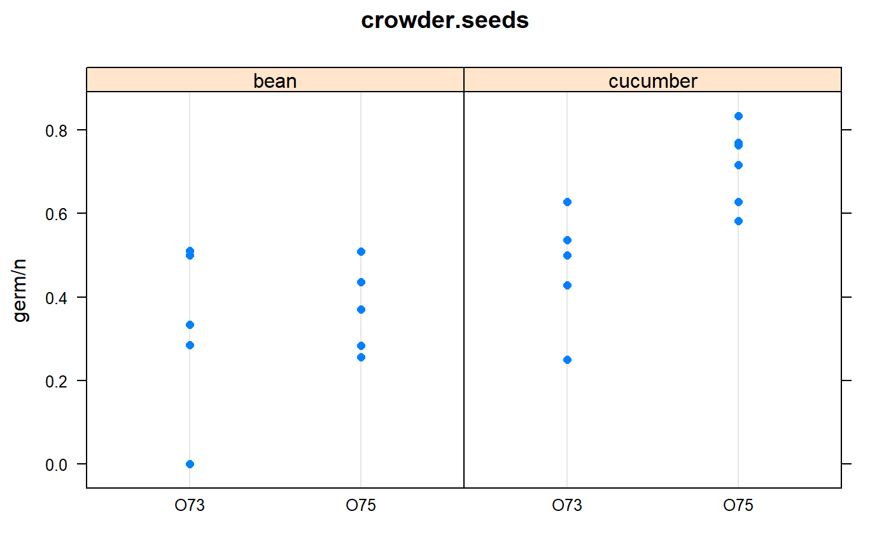

crowder.seeds.RdNumber of Orobanche seeds tested/germinated for two genotypes and two treatments.
plateFactor for replication
genFactor for genotype with levels O73, O75
extractFactor for extract from bean, cucumber
germNumber of seeds that germinated
nTotal number of seeds tested
Egyptian broomrape, orobanche aegyptiaca is a parasitic plant family. The plants have no chlorophyll and grow on the roots of other plants. The seeds remain dormant in soil until certain compounds from living plants stimulate germination.
Two genotypes were studied in the experiment, O. aegyptiaca 73 and O. aegyptiaca 75. The seeds were brushed with one of two extracts prepared from either a bean plant or cucmber plant.
The experimental design was a 2x2 factorial, each with 5 or 6 reps of plates.
Crowder, M.J., 1978. Beta-binomial anova for proportions. Appl. Statist., 27, 34-37. https://doi.org/10.2307/2346223
N. E. Breslow and D. G. Clayton. 1993. Approximate inference in generalized linear mixed models. Journal of the American Statistical Association, 88:9-25. https://doi.org/10.2307/2290687
Y. Lee and J. A. Nelder. 1996. Hierarchical generalized linear models with discussion. J. R. Statist. Soc. B, 58:619-678.
# \dontrun{ library(agridat) data(crowder.seeds) dat <- crowder.seeds m1.glm <- m1.glmm <- m1.bb <- m1.hglm <- NA # ----- Graphic libs(lattice) dotplot(germ/n~gen|extract, dat, main="crowder.seeds")# ----- GLM. # family=binomial() fixes dispersion at 1 # family=quasibinomial() estimates dispersion, had larger std errors m1.glm <- glm(cbind(germ,n-germ) ~ gen*extract, data=dat, #family="binomial", family=quasibinomial() ) summary(m1.glm)#> #> Call: #> glm(formula = cbind(germ, n - germ) ~ gen * extract, family = quasibinomial(), #> data = dat) #> #> Deviance Residuals: #> Min 1Q Median 3Q Max #> -2.01617 -1.24398 0.05995 0.84695 2.12123 #> #> Coefficients: #> Estimate Std. Error t value Pr(>|t|) #> (Intercept) -0.4122 0.2513 -1.640 0.1193 #> genO75 -0.1459 0.3045 -0.479 0.6379 #> extractcucumber 0.5401 0.3409 1.584 0.1315 #> genO75:extractcucumber 0.7781 0.4181 1.861 0.0801 . #> --- #> Signif. codes: 0 '***' 0.001 '**' 0.01 '*' 0.05 '.' 0.1 ' ' 1 #> #> (Dispersion parameter for quasibinomial family taken to be 1.861832) #> #> Null deviance: 98.719 on 20 degrees of freedom #> Residual deviance: 33.278 on 17 degrees of freedom #> AIC: NA #> #> Number of Fisher Scoring iterations: 4 #># --- GLMM. Assumes Gaussian random effects libs(MASS) m1.glmm <- glmmPQL(cbind(germ, n-germ) ~ gen*extract, random= ~1|plate, family=binomial(), data=dat)#>#>#>#> Linear mixed-effects model fit by maximum likelihood #> Data: dat #> AIC BIC logLik #> NA NA NA #> #> Random effects: #> Formula: ~1 | plate #> (Intercept) Residual #> StdDev: 0.215445 1.04035 #> #> Variance function: #> Structure: fixed weights #> Formula: ~invwt #> Fixed effects: cbind(germ, n - germ) ~ gen * extract #> Value Std.Error DF t-value p-value #> (Intercept) -0.4406176 0.2453588 17 -1.7958094 0.0903 #> genO75 -0.1048122 0.3058526 17 -0.3426886 0.7360 #> extractcucumber 0.5247581 0.3364398 17 1.5597383 0.1372 #> genO75:extractcucumber 0.7985771 0.4243540 17 1.8818656 0.0771 #> Correlation: #> (Intr) genO75 extrct #> genO75 -0.802 #> extractcucumber -0.729 0.585 #> genO75:extractcucumber 0.578 -0.721 -0.793 #> #> Standardized Within-Group Residuals: #> Min Q1 Med Q3 Max #> -1.59952544 -0.85340590 0.03919434 0.71649291 1.30878355 #> #> Number of Observations: 21 #> Number of Groups: 21# ----- HGML package. Beta-binomial with beta-distributed random effects # libs(hglm) # m1.hglm <- hglm(fixed= germ/n ~ I(gen=="O75")*extract, weights=n, data=dat, # random=~1|plate, family=binomial(), rand.family=Beta(), # fix.disp=1) # ----- INLA package. See: https://haakonbakka.bitbucket.io/btopic102.html # libs(INLA) # gen,extract are fixed. plate is a random effect # Priors for hyper parameters. See: inla.doc("pc.prec") # hyper1 = list(theta = list(prior="pc.prec", param=c(1,0.01))) # m1.inla = inla(germ ~ gen*extract + f(plate, model="iid", hyper=hyper1), # data=crowder.seeds, # family="binomial", Ntrials=n, # control.family=list(control.link=list(model="logit"))) # Compare coefficients ## round(summary(m1.glm)$coef,2) ## Estimate Std. Error t value Pr(>|t|) ## (Intercept) -0.41 0.25 -1.64 0.12 ## genO75 -0.15 0.30 -0.48 0.64 ## extractcucumber 0.54 0.34 1.58 0.13 ## genO75:extractcucumber 0.78 0.42 1.86 0.08 ## round(summary(m1.glmm)$tTable,2) ## Value Std.Error DF t-value p-value ## (Intercept) -0.44 0.25 17 -1.80 0.09 ## genO75 -0.10 0.31 17 -0.34 0.74 ## extractcucumber 0.52 0.34 17 1.56 0.14 ## genO75:extractcucumber 0.80 0.42 17 1.88 0.08 ## round(summary(m1.bb)$BCoef,2) ## Estimate Std. Error z value Pr(> |z|) ## (Intercept) -0.44 0.22 -2.04 0.04 ## genO75 -0.10 0.27 -0.36 0.72 ## extractcucumber 0.52 0.30 1.76 0.08 ## genO75:extractcucumber 0.80 0.38 2.11 0.03 ## round(summary(m1.hglm)$FixCoefMat,2) ## Estimate Std. Error t-value Pr(>|t|) ## (Intercept) -0.47 0.24 -1.92 0.08 ## I(gen == "O75")TRUE -0.08 0.31 -0.25 0.81 ## extractcucumber 0.51 0.33 1.53 0.16 ## I(gen == "O75")TRUE:extractcucumber 0.83 0.43 1.92 0.08 ## round(m1.inla$summary.fixed,2) ## mean sd 0.025quant 0.5quant 0.975quant mode kld ## (Intercept) -0.46 0.24 -0.94 -0.45 -0.01 -0.45 0 ## genO75 -0.09 0.30 -0.67 -0.10 0.52 -0.11 0 ## extractcucumber 0.53 0.32 -0.12 0.53 1.17 0.53 0 ## genO75:extractcucumber 0.82 0.42 0.01 0.82 1.66 0.81 0 # ----- Stan using pre-built models from rstanarm ## libs(tidyverse, rstan, rstanarm) ## m1.stan <- stan_glm( ## cbind(germ,n-germ) ~ gen*extract, ## data=dat, ## family = binomial(link="logit") ) ## round(posterior_interval(m1.stan, prob=.90),3) ## # 5 ## # (Intercept) -0.715 -0.111 ## # genO75 -0.512 0.228 ## # extractcucumber 0.123 0.977 ## # genO75:extractcucumber 0.248 1.284 if(0) { # --- rjags version --- # JAGS/BUGS. See https://mathstat.helsinki.fi/openbugs/Examples/Seeds.html # Germination rate depends on p, which is a logit of a linear predictor # based on genotype and extract, plus random deviation to intercept # To match the output on the BUGS web page, use: dat$gen=="O73". # We use dat$gen=="O75" to compare with the parameterization above. jdat =list(germ = dat$germ, n = dat$n, root = as.numeric(dat$extract=="cucumber"), gen = as.numeric(dat$gen=="O75"), nobs = nrow(dat)) jinit = list(int = 0, genO75 = 0, extcuke = 0, g75ecuke = 0, tau = 10) # Use logical names (unlike BUGS documentation) mod.bug = "model { for(i in 1:nobs) { germ[i] ~ dbin(p[i], n[i]) b[i] ~ dnorm(0.0, tau) logit(p[i]) <- int + genO75 * gen[i] + extcuke * root[i] + g75ecuke * gen[i] * root[i] + b[i] } int ~ dnorm(0.0, 1.0E-6) genO75 ~ dnorm(0.0, 1.0E-6) extcuke ~ dnorm(0.0, 1.0E-6) g75ecuke ~ dnorm(0.0, 1.0E-6) tau ~ dgamma(0.001, 0.001) sigma <- 1 / sqrt(tau) }" libs(rjags) oo <- textConnection(mod.bug) j1 <- jags.model(oo, data=jdat, inits=jinit, n.chains=1) close(oo) c1 <- coda.samples(j1, c("int","genO75","g75ecuke","extcuke","sigma"), n.iter=20000) summary(c1) # Medians are very similar to estimates from hglm # libs(lucid) # print(vc(c1),3) ## Mean SD 2.5 ## extcuke 0.543 0.331 -0.118 0.542 1.2 ## g75ecuke 0.807 0.436 -0.0586 0.802 1.7 ## genO75 -0.0715 0.309 -0.665 -0.0806 0.581 ## int -0.479 0.241 -0.984 -0.473 -0.0299 ## sigma 0.289 0.142 0.0505 0.279 0.596 # Plot observed data with HPD intervals for germination probability c2 <- coda.samples(j1, c("p"), n.iter=20000) hpd <- HPDinterval(c2)[[1]] med <- summary(c2, quantiles=.5)$quantiles fit <- data.frame(med, hpd) libs(latticeExtra) obs <- dotplot(1:21 ~ germ/n, dat, main="crowder.seeds", ylab="plate", col=as.numeric(dat$gen), pch=substring(dat$extract,1)) obs + segplot(1:21 ~ lower + upper, data=fit, centers=med) ## --- R2jags version --- libs("agridat") libs("R2jags") dat <- crowder.seeds # To match the output on the BUGS web page, use: dat$gen=="O73". # We use dat$gen=="O75" to compare with the parameterization above. jdat =list(germ = dat$germ, n = dat$n, root = as.numeric(dat$extract=="cucumber"), gen = as.numeric(dat$gen=="O75"), nobs = nrow(dat)) jinit = list(list(int = 0, genO75 = 0, extcuke = 0, g75ecuke = 0, tau = 10)) mod.bug = function() { for(i in 1:nobs) { germ[i] ~ dbin(p[i], n[i]) b[i] ~ dnorm(0.0, tau) logit(p[i]) <- int + genO75 * gen[i] + extcuke * root[i] + g75ecuke * gen[i] * root[i] + b[i] } int ~ dnorm(0.0, 1.0E-6) genO75 ~ dnorm(0.0, 1.0E-6) extcuke ~ dnorm(0.0, 1.0E-6) g75ecuke ~ dnorm(0.0, 1.0E-6) tau ~ dgamma(0.001, 0.001) sigma <- 1 / sqrt(tau) } parms <- c("int","genO75","g75ecuke","extcuke","sigma") j1 <- jags(data=jdat, inits=jinit, parms, model.file=mod.bug, n.iter=20000, n.chains=1) print(j1) ## mu.vect sd.vect 2.5 ## extcuke 0.519 0.325 -0.140 0.325 0.531 0.728 1.158 ## g75ecuke 0.834 0.429 -0.019 0.552 0.821 1.101 1.710 ## genO75 -0.096 0.305 -0.670 -0.295 -0.115 0.089 0.552 ## int -0.461 0.236 -0.965 -0.603 -0.455 -0.312 0.016 ## sigma 0.255 0.148 0.033 0.140 0.240 0.352 0.572 ## deviance 103.319 7.489 90.019 98.010 102.770 108.689 117.288 traceplot(as.mcmc(j1)) densityplot(as.mcmc(j1)) HPDinterval(as.mcmc(j1)) } # }